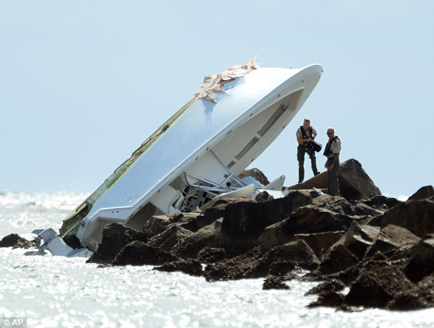

|  | While filming there first ever promotional video for Prestige Worldwide, wide, wide, wide. step-brothers Dale and Brennan made a bit of an error and allowed there fathers boat to steer itself into the shoreline thus destroying the boat for good. After talking to the Co-CEOS's and there promise to fix the boat we have this from the father of Dale Doback "They're jackaloons! Failures! Failures!" More to follow on this intense news update, after more details of this crash come forth. |